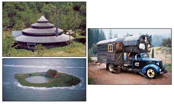
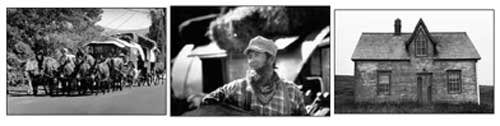

Home Work: Handbuilt Shelter
Lloyd Kahn’s book proves there’s no perspiration without inspiration when it comes to building a unique home.
A book review by Bill Steen
August/September 2005
Looking for the cure to the common home? You’ll find all the inspiration you’ll ever need about unique, handmade and offbeat shelter in Lloyd Kahn’s newest book, Home Work: Handbuilt Shelter. Packed with 1,100 photos and 300 illustrations of dwellings, domes, houses and huts from all points around the globe, this remarkable 245-page book is about the eclectic materials used to make these homes and the eccentric dreamers and doers that built them. Kahn brings them all to life.
Home Work tells the stories of buildings made by people who chose - sometimes out of necessity - to build homes for themselves using local and recycled materials rather than relying upon the standardized products of modern society.
Take Kelly and Rosana Hart’s “earthbag-papercrete” house in Colorado (pictured at right), for example. This intrepid couple constructed their house from plastic bags filled with crushed volcanic rock to form walls with excellent insulative values. The bags then were covered with a low-maintenance exterior shell called “papercrete” (a mixture of paper and Portland cement) that the couple says will never rot or be damaged by moisture.
Throughout the book, the reader connects with Kahn’s love of what might simply be called “great buildings,” the kinds that have been carefully crafted and that stand in dramatic contrast to the typical cookie-cutter house. His passion is to seek out that which is well-made and unusual.
Kahn is one of the most amazing, generous and inspirational people I’ve met. The vision he locked onto in the 1970s when he was the shelter editor of The Whole Earth Catalog and wrote his first book, Shelter (1973), has stayed with him.
Many people, including myself, were influenced by his involvement in the sustainable lifestyle movement. Kahn’s original Shelter featured an article on buildings of baled hay - it was one of the major factors in reviving straw bale building. Without the influence of his writing, I might not have met my wife, Athena, who built a straw bale house based on her father’s copy of Shelter, and Athena and I never would have written our book, The Straw Bale House.
The yurts of Bill Coperthwaite (one shown at top left) in Maine are another case in point. Coperthwaite, who holds a Harvard doctorate in education, recognized the “folk genius in the design of the traditional Mongolian yurt” and created fantastic multistory, tapered-wall yurts using designs that reduce the required building skills to a minimum, while still producing a beautiful, inexpensive and permanent shelter.
At first glance, Home Work may appear to focus on 1960s- and ’70s-inspired buildings, but a closer look reveals much more. A large part of the book is dedicated to traditional buildings clearly inspired by earlier eras. Timber-frame structures, classic barns, old ranches, riverside homes and other houses from Utah to Nova Scotia all are represented, just to name a few. Home Work documents the link between that which is traditional and that which is modern, countercultural and innovative.
Of the three decades of travel and photo-taking this book documents, Kahn spent a good portion of it in the United States, where he sometimes encountered the run-down shacks and shanties on the High Plains, and poverty-stricken areas of the Deep South and Southwest. What he found were homes built from the low-cost materials that could be scraped together by struggling Dust Bowl farmers, desert dwellers and sharecroppers to defend against their sometimes-harsh environments. Still, these buildings - with their makeshift corrugated metal roofs and worn, moldy wooden beams - include Spartan ornaments of creativity and inspiration such as unusual dormer windows, wrap-around porches, rounded shingles and filigree woodwork on porch posts.
Because the definition of a “home” is a moving target, Kahn also devotes space in the book to documenting life on the road in the form of house trucks, house buses, camper shells and tents, as well as the real-life odyssey of ex-flower-child-turned-North American nomad John Stiles, who wanders the California countryside in a 14-donkey covered wagon caravan. What Kahn found when meeting these mobile homemakers is that the idea of a home truly is in the eye of the beholder.
In sections named “Perpetual Camping,” “Mongolian Cloud Houses” and “Less Is More,” Kahn ruminates on living with the most minimal of shelter and how best to live well and comfortably upon the land.
A careful look at Home Work reveals that most home builders featured were in their 20s when Shelter was published. Now they appear as well-seasoned, wiser versions of their earlier selves. I’m betting the children of those in the new book - and inspired readers everywhere - will carry that same spirit forward, and perhaps Kahn will do another version of Home Work 30 years from now. I wouldn’t be surprised. (He would be 100!) At the age of 70, he still skateboards, surfs and runs.
If you dream of building your own home, or you just like unusual and inspiring buildings, Home Work is about as entertaining a companion as you can find. It’s a great read, and it provokes visionary thinking and new ideas. Your library of alternative building books won’t be complete without it.
Global Homes, Local Building Materials
Home Work author Lloyd Kahn (pictured below) isn’t your average 70-year-old man. Spending three decades on the road has given him a Kerouacian storytelling perspective. His stream-of-consciousness photography not only documents the layman’s view of handbuilt homes, it documents the lives of the world’s most resourceful and creative builders.
If there is one unifying theme in this disparate patchwork of homes, it’s the use of local, recycled materials to create inexpensive shelter. The hut at right was inspired by an authentic Mongolian yurt and a Native American sweat lodge, built using pliable wooden branches for support and old potato sacks for cover. The greenhouse was made with old glued-together auto windshields. In parts of China, the most ubiquitous building material is bamboo, which forms the majority of this stunning treehouse. In North America, the iconic tipi’s light ecological footprint and warm allure still make it an inexpensive form of nomadic shelter. In the Pacific Northwest, Ianto Evans built a quaint cottage and earthy homestead just as eco-friendly as a tipi “by taking the ground from under your feet and turning it into a building.” His home is built from wood and cob - a mixture of clay, sand and straw.
|
The interior of this earthbag home has a palpable handmade feeling thanks to the rounded, uneven "papercrete" wall plaster and natural wood cents. |
 The idea of a home extends beyond the strict definition of a house, and this unique Japanese barn/root cellar is a great example of how an inconspicuous shed can become a one-of-a-kind creation and an inspiration to others. |
Right: A 1937 Chevrolet "Gypsy Wagon" owned by Jack Fulton. Top: Bill Coperthwaite's personal twist on the yurt design. Bellow: The Hallig homes of northern Germany are built above sea level on artificial mounds of earth to withstand high tide. This home looks much like a lonely ship lost at sea. |
|
 John Stiles (middle) roams the California countryside with his 14-donkey caravan (left) , carrying everything he needs to survive with him. "I travel the freeways and in huge metropolitan areas with no driver's license, no registration, no insurance, no taxes, no permits - nothing." Right: This Dust Bowl-era house was built from the most basic of building materials in a hostile environment, yet notice the subtle creativity in the dormer's urved eaves. |
 |
|